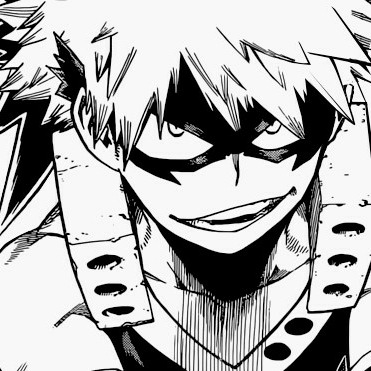
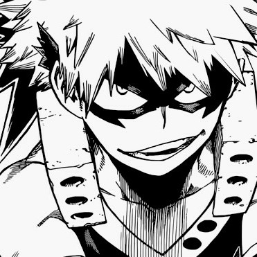
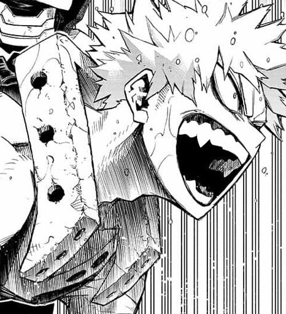

BAKUGO KATSUKI
Go ahead and ask me who my number one favorite character from any series is—my automatic answer will be My Hero Academia's major deuteragonist, a man of many names (by both the characters and the fandom).
Meet the Explosion Hero: Great Explosion Murder God Dynamight! Later in the series though, he's simply referred to as Dynamight. Bakugo's full hero name is 大爆殺神ダイナマイト ( daibakusasshin dainamaito ) when written in Japanese. He's also known as かっちゃん ( kacchan / katchan ) to certain characters, especially Midoriya Izuku.
☆
/trivia
- in the MHA popularity poll, he's ranked 1st ten times (seven of those being global, the other three being US-exclusive)
- with series proper, he ranked 1st in both the U.A. Entrance Exam and the U.A. Sports Festival
- failed his Provisional License Exam along with Shoto Todoroki
- a student of Class 1-A at U.A. High School
- stands at 5'8" which is a bit of an average height in his class
- born on April 20 with Taurus ♉ as his Sun Sign, oldest in 1-A
- a fan of spicy food and mountain climbing
- doesn't sleep with blankets
- his prototype version was a much nicer character; instead of naming him Bakugo, he was named Gougou with the same kanji as Todoroki 轟 ( gou / todoroki )
☆
/stats
- ULTRA_ARCHIVE (CHAP. 1-88)
- Power: ★★★★★ (A)
- Technique: ★★★★★ (A)
- Speed: ★★★★☆ (B)
- Intelligence: ★★★★☆ (B)
- Cooperativeness: ★☆☆☆☆ (E)
- ULTRA_ANALYSIS (CHAP. 1-235)
- Technique: ★★★★★☆ (A+)
- Power: ★★★★★☆ (A)
- Speed: ★★★★★☆ (A)
- Wits: ★★★★★☆ (A)
- Proper Language: ★☆☆☆☆☆ (E)
☆
/ultimate_moves
- 💥 HOWITZER IMPACT
- strongest move wherein Bakugo (1) propels himself and creates a tornado with explosions, (2) uses that tornado to build up fuel for another explosion, and (3) releases the aforementioned explosion either when coming in contact with the target or when in midair
- 💥 EXPLOSIVE SPEED
- using explosions as a propeller on both the ground ( speed ) and the air ( flight )
- 💥 STUN GRENADE
- creating a light sphere that explodes into a flash, similar to how it is in real life
- Point-Blank is a range point wherein Bakugo can stun and immobilize an opponent without lasting damage
- 💥 AP SHOT
- shooting concentrated blasts by stretching one hand and on that palm, forming a circle with his other hand
- Auto Cannon is a rapid-fire variation with reduced power
- Machine Gun is also a rapid-fire variation but much larger
- 💥 EXPLODE-A-PULT
- (1) grab your opponent, (2) propel into a spinning motion and send off explosions, and (3) throw your opponent
- 💥 LAND MINE BLAST
- uses Grenadier Bracer ( his "gauntlets" ) and lets off a massive ground explosion to clear obstacles
- 💥 CLUSTER
- condensed explosions that he can use combined with other moves like Explosive Speed and Howitzer Impact
- 💥 FULL COWL + DETROIT SMASH
- both used when Bakugo temporarily shared One For All with Midoriya in My Hero Academia: Heroes Rising
☆
/gallery
 

let's go...


...deku!

爆破
don't look down on us!